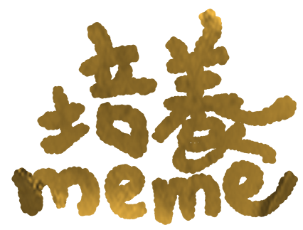

為了讓迷因更加偉大。
To make memes great again and again.
為了讓迷因更加偉大。
To make memes great again and again.
這裡是ㄇ團隊架設的迷因主題網站，
產製meme科普文還有一些相關的東東。
ㄇ由三個喜歡看meme的normie組成，
秉持著「這個不能只有我看到」的心推廣迷因文化，
希望世界可以透過meme找到一些知識和歡笑。
（如果你有空的話）
跟著培養memeㄉ毛毛蔥、香菇、蛤蜊和小紅貓，
一起探索迷因的世界吧！
迷因的大愛好者，喜歡追根究底因此博學多聞（在迷因文化方面）。
正身不明，但據本人表示是一根柔軟度很好的蔥，它的柔軟不只體現在身體上，也可以從態度看出端倪。
面對一個新的meme的時候，會先嘗試理解成因，包容過時的meme，認為它們還是有可取之處。
平常喜歡蠕動，很嚮往成為翠玉白菜。
最近的煩惱：在地球貓貓教和飛天義大利麵神教之間掙扎
喜歡的食物：昨天晚餐是麻辣燙
最近的休閒：在看香菇推薦的《ARuFa的超．浪費時間圖鑑》
一個普通的蛤蜊，不太確定有沒有熟，
沒有嘴巴也不講話，但能像響板一樣發出聲音。
平常喜歡自製迷因與他人交流，
但是存在感低落，邊緣人。
最近的煩惱：很喜歡雙關語但總想不出什麼好梗
喜歡的食物：蒜香白酒蛤蜊義大利麵
綽號：蜊蜊安
長得像吐司但實際上是切片蘑菇（加在咖哩裡的那種），
笑臉迎人但是出口成髒，隨處可見的大學生，
因為說話會分解所以只能講一些簡單的字，譬如e04。
平常喜歡看迷因但是都在社團裡潛水。
最近的煩惱：魯
喜歡的食物：肥宅快樂餐
喜歡的節目：喜歡看日綜動漫，但又被室友笑肥宅
從美麗的嘉德麗雅蘭中blah地誕生的哲學家，
實際上是培養meme的吉祥物。
因為是隻方形貓，無法像一般貓貓一樣可以隨意變形，
因此有時會感受到前所未有的孤獨。
最近的煩惱：昨天下午是牠第5823次進去盒子時被卡住
喜歡的食物：乳酪塔，因為甜點是文明的象徵
專長：英文不錯，自己經營著翻譯粉專
是由ㄇ團隊架設的meme主題網站，產製迷因科普文還有一些相關的東東。
迷因科普文一週兩次，其他內容不定時更新，謝謝您的關注。
網站地圖自行取用↓
Meme→看一些memeㄉ背景故事
Project→小遊戲和meme大大ㄉ專訪+其他優質內容
FAQ→你正在看
Links→精選網站，前往網路世界冒險
Character→認識培養meme的小夥伴們
看狀況，粉專有的話就有，沒有就沒有。（網站不會有）
ㄅ行喔，ㄅ歉。
爽。
可以用底下那個留言，或是粉專私訊。好人一定會有好報ㄉ。
文章歡迎轉貼並附上來源。如有改寫或合作需求請用悄悄話留下信箱，著作財產權感謝您。
可以在這裡跟我們說說話，
有相關問題、合作邀約、任何建議也歡迎留言。